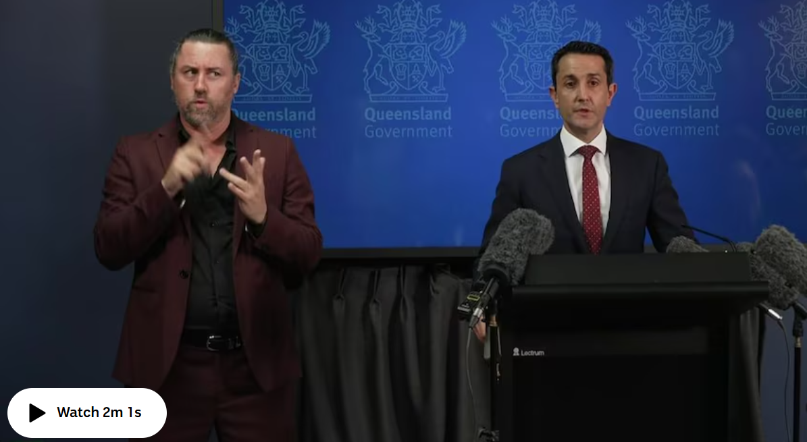
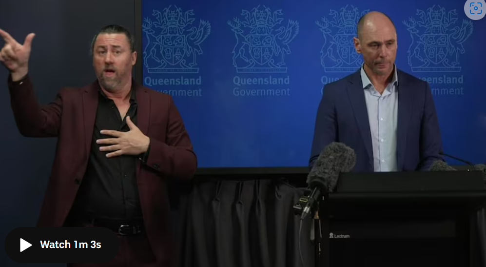

Tropical Cyclone Alfred forecast to make landfall from Thursday as Queensland braces for heavy rain

TQueensland Premier David Crisafulli said authorities were preparing for a possible severe weather event, with impacts across hundreds of kilometres of coastline extending from Bundaberg to the Gold Coast.
"It is a large system and it presents a big challenge for a large part of the Queensland coastline," he said.

On Sunday afternoon, the category one system was 370 kilometres north-east of Bundaberg and moving south at 10 kilometres per hour.
Senior forecaster Matthew Collopy said it was expected to move south to south-east in the next 24 hours.

From Tuesday, there is an increasing risk it will turn west and track back towards the south-east Queensland or northern NSW coast and make landfall as a category two system on Thursday.
Mr Crisafulli said while a tropical cyclone crossing south-east Queensland was not a "frequent occurrence", it has happened before - including Tropical Cyclone Nancy in 1990, Tropical Cyclone Zoe in 1974, and the great Gold Coast cyclone of 1954, which predated the current warning system.